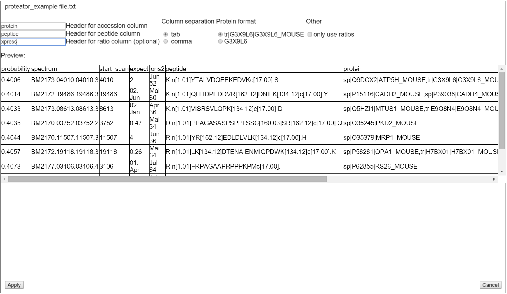
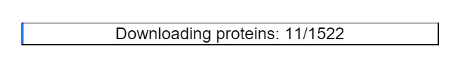
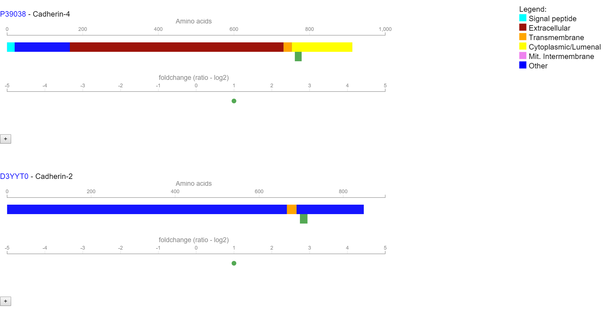

Manual
The following guide will allow you to visualize protein/peptide data with Proteator. Begin with Uploading data in order to learn how to map peptides
to their respective positions on the protein. Tools and filters provides information for the different tools or filters to use.
For usage of Proteator, we recommend the web browser Google Chrome, although some other browsers (e.g. Microsoft Edge will also work. Please note
that Proteator is still under development and will receive updates from time to time which will improve its functionality.
Uploading data
- Download example files: .txt file (use this file to test the input of custom files) or .mzTab file
- Requirements: The required input consists of a text file (.mzTab or comma- or tab-separated values). When using other file types, please make sure they contain a protein identifier (e.g. P12830) and the sequence of identified peptides (e.g. K.n[1.01]YTALVDQEEKEDVKc[17.00].S). The header for the respective column should be located in the first line of the text file.
- Under Files select any number of files that you want to visualize. Please note that big or many files will increase loading time.
- After all files have been selected, press submit.
- The following window will open up: 
- At the upper left corner, the file names are displayed. Click on the names to change the file.
- The table in the center of the window provides a preview of the file.
- Please enter the following information:
- Specify whether the file is comma or tab-separated under "Column separation".
- For "Header for accession column", enter the title of the column that contains the protein accession (in this example "protein"). Specify the format with the rightmost selection under "Protein format". Note that if several proteins, separated by commas are present, only the first one will be regarded.
- For "Header for peptide column", enter the title of the column containing the peptide sequence (example: "peptide").
- If the file contains an express ratio, enter the respective colum title under "Header for ratio column" (example: "xpress"). The values should be supplied as ratio (values between 0 and →∞).
- Repeat those steps for all files which are displayed in the the upper left corner of the window.
- Click apply.
- For visualizing express ratios with .mztab files, at least two "peptide_abundance_study_variable" columns must be present. In the input window you can specify the respective column for treatment and control.
- Note for TPP-XPress: If you have several files, one of which containing xpress ratios, the other one the peptides, check in the file with the peptides the box "only use ratios". All xpress ratios will be retrieved from this file by the sequences of the peptides specified in the other file.
- Proteator will now begin downloading the necessary protein data from Uniprot. The progress can be followed by the appearance of the following progress bar: 
- Please be patient as the download can take some time.
- Once it is finished, the submitted data will be displayed in the following form: 
- Accession and long name of the protein are displayed on the top left. Click on the accession to be redirected to the protein entry on Uniprot.
- It follows a scale for the size of the protein and the protein itself. The colored areas on the protein correspond to certain topological domains. Refer to the legend on the right or hover your mouse over the protein to learn which color means which type of domain.
- Below the protein you can see the peptides mapped to it. If an express ratio was entered during input, the fold change will be calculated and reflected by the color of the peptide. The exact number will be listed as foldchange - log2(xpress) - on the bar below the protein. Hover your mouse over a peptide or click on it to see its sequence and express ratio.
- Click on the "+" button for a more extensive view of the protein sequence with mapped peptides and topological annotation.
Tools and filters
Filters:
- After a dataset has been visualized, move your mouse to "Filter".
- At the current moment, you can filter for three types of topological domains: cytoplasmic/lumenal, transmembrane and extracellular.
- Select any of those three domains.
- Filter types determines which logic should be applied to the selected domains:
- Select "Display all" to undo filters and display everything.
- "AND" applies Boolean AND logic to the selected domains. If "AND" is selected, only proteins are shown which contain ALL of the selected domains.
- "OR" applies Boolean OR logic to the selected domains. If "OR" is selected, all proteins are shown which contain either of the selected domains.
Tools:
- Under "Tools" click "Invert foldchange" to invert all foldchange values.
- Toggle "I/L" nondifferentiation in order to remove differentiation between I and L in peptides when aligning. I and L will be displayed as "1" instead.
- A histogram can be created under "Create histogram"
- [CURRENTLY DEPRECATED] Click "Calculate coverage" to calculate and display the coverage for each protein.
Impressum
Proteator was created by Patrick Heisterkamp (contact: patrick.heisterkamp@gmail.com), University of Freiburg, on order of the AG Schilling, University of Freiburg.Especial gratitude goes to Lars Nilse and Björn Grüning (both University of Freiburg) who provided valuable support during the development.
The sequence viewer is used under Apache License 2.0. It was created by greenify and ljgarcia on biojs.io. Return to main page.